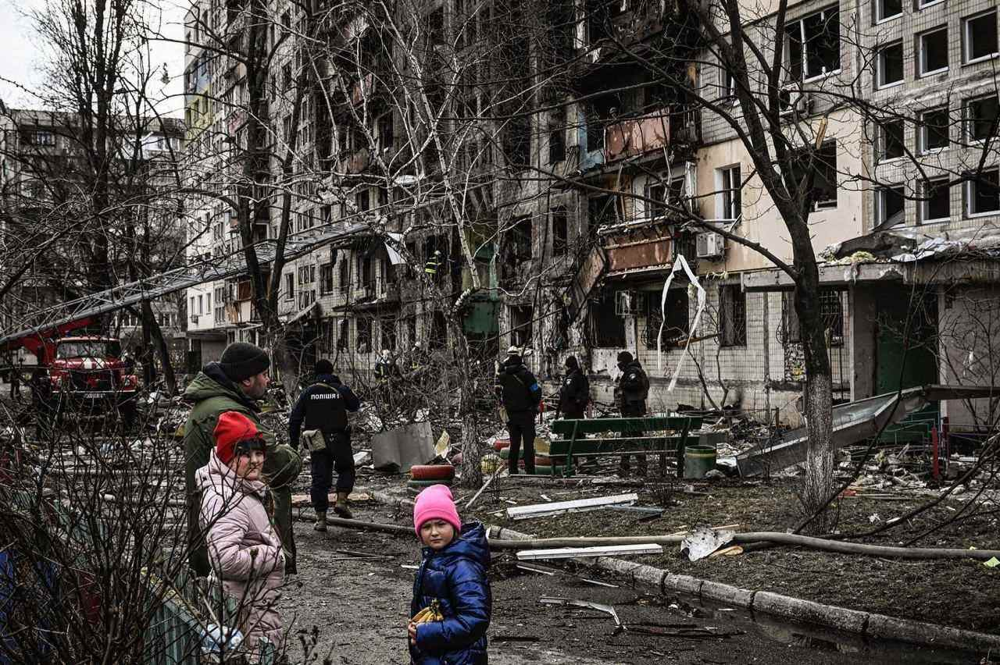
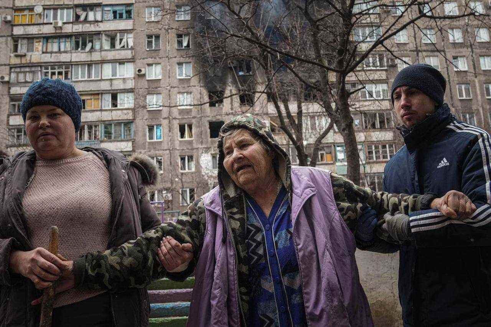

<>I know that Ukraine will win and be a free country!
<>I know that Ukraine will win and be a free country!


"LINK TO VIEW"CLICK.

"LINK TO VIEW"CLICK.
"Ministry and Committee forDigital Transformation of Ukraine"
"LINK TO VIEW"CLICK.

"Razom"
"LINK TO VIEW" LINCK.
"Voices"
"LINK TO VIEW"CLICK.

"Cyberpolice of Ukraine"
"LINK TO VIEW"
The collected cryptocurrency by the State Funds is connected to the conversion process of the FTX and KUNA exchanges. The exchange converts cryptocurrency into fiat, dollar or UAH and sends it to the accounts of the Ministry of Digital Development or the National Bank of Ukraine. But, many people in the World, doubting the effectiveness of their help, because of the negative image of corrupt officials in Ukraine! In support of the above, here is a quote: I am sure that the Ukrainian government is corrupt and oppressed many people within its borders for various reasons, by the way,
so I would not donate to their official BTC addresses or anything like that post "original link"CLICK. Therefore, many people prefer to provide charitable assistance not to large, impersonal, official state funds, but through ordinary people's volunteers, relatives or ordinary caring people on the ground there are more and more people like this every day! People want to help a particular city/region or even individually a person, a family, a community. Concerning the fears spread by about massive fundraising scams! I will say this: against the general background of volunteers and good people they do not have a significant impact on the desire of good people to help other good people! Most people who help are very reasonable! Comparing the risks between fraudulent fundraising and saving people's lives, people unambiguously choose to help Ukrainians! After all, even a little help can save someone a big life! At a minimum, doing good deeds, people put a huge plus on their Karma! In other words, our deeds ripen according to the principle “what we sow, we will reap”
good deeds will respond with good, evil ones will turn into evil! I think who wants to help he will help, and who does not want will find a reason to refuse! Dear friends, if I have not convinced YOU of the need to provide assistance to Ukrainians, at least in an amount that does not cause tangible damage to personal well-being, then my further convictions lose their meaning! As the saying goes: "God is your judge"! But if today you stand apart from grief in Ukraine, then do not be surprised if tomorrow you see this enemy at your gates! I am 60 years old, in 1986, I saw the evil face of Atomic Chernobyl and I dare to say that even more Evil has come to Ukraine! Correctly wrote the author of the post "original link"CLICK. If you want to feel what most Ukrainians felt a few hours ago, watch these videos... "LINK TO VIEW"CLICK. "LINK TO VIEW"CLICK. "LINK TO VIEW"CLICK. The power of Airborne Vacuum Bombs and rockets is terrifying even if you are just a spectator, these just those moments in life when you want to be away from all this. And here is what the author of another post wrote Imagine that one day you wake up and see that your house came under artillery fire, 5 members of your family were killed,
you were forced to become refugees, not knowing if you would ever return to the country, which they have called home all their lives. I'll add from "myself"! I warn you it's impossible to watch without tears! Destroyed houses, shelling of the hospital and maternity hospital, crying mothers! "LINK TO VIDEO"CLICK. For example, the author of the post bitcointalk wrote I survived a bloody war and I know perfectly well what it means when grenades and air bombs fall around, and you every for a moment you wonder if it will hit you too. "post"CLICK. Your country is now in the same situation as mine was in 1991, when Serbian executioners set out to demolish and kill everything in front of them, sparing neither small children nor pregnant women. In Ukraine, the Patriotic War is going on and it is fighting not only for itself, but for the entire civilized World! Dear friends, if I did not convince the need to help the Ukrainians, at least in an amount that would not cause tangible damage to your personal well-being, then further convictions lose their meaning! As they say: God is your Judge! But if today you stand aside from grief in Ukraine, then do not be surprised if tomorrow you see the enemy at your gates! I want to reply to the author of the franky1 post! "original link"CLICK. Dear franky1! You asked if there are any local businesses that deliver in an area that accepts bitcoin. And I mean legitimate businesses. (not fake phishing sites created last month) through which people can just buy things on a website where you can host some legitimate shelters/clearing points, physical addresses of hospitals (legitimate charities), etc. and use the delivery address of the shelter / hospital as the destination of the goods, so that they can then be delivered directly to the shelters/hospitals. Dear franky1! As for "non-fake phishing sites created last month" I will say this phishing was relevant for peacetime and reasoning over a cup of coffee under a sky without bombs! In war, other criteria of truth work! Ukraine did not believe that russia would attack, but the treacherous attack happened!


Of course there are new sites for collecting donations!
New sites for fundraising will appear: yesterday, today, tomorrow and every new day, and this is good for Ukrainians and Victory of the whole Friendly World!
This does not mean at all that these sites are phishing!

It rather means that more good people want to help other good people!

What are the benefits of cryptocurrencies for donations?
Cryptocurrency is not a replacement for traditional donations “it’s an additional fundraising tool”.
For volunteers who collect donations for the army, this is important, because some financial organizations equate their activities with "support for violence."

For example, on the first day of russia’s invasion of Ukraine, February 24, fundraising platform Ptatreon removed the page of the Turn Back Alive foundation, explaining that it “does not allow the funds raised on the platform to be used to support violence or purchase military equipment.”
Compared to bank transfers, it has several advantages It's fast and easy.
Organizations do not need to spend time opening a bank account and verifying; transfers are made almost instantly, unlike SWIFT transactions, which can take several days. According to Mr.Chobanyan (owner of the Ukrainian exchange KUNA), even if the banking system goes out, people know how to convert cryptocurrency into cash and vice versa.
So, thanks to the crypt, it will be possible to buy everything you need during the War.
Ukrainians saw cryptocurrency as an alternative to public and private financial institutions, which are not trusted in wartime due to the threat of losing funds.

Evacuated Ukrainians can transfer funds to crypto, so that later they can safely convert it back to fiat currency already abroad, not risking losing significant mounts due to a depreciation
"LINK TO SOURCE"CLICK.
Dear "Franky1"! I understand your concerns and will try to tell you how you and other merciful people can help Ukrainians, my compatriots!
Franky1! Thank you and those who help Ukrainians in fight for Freedom!

My "step by step" life hack for people who want to help Ukrainians, but do not trust corrupt officials, volunteers and just caring people in Ukraine!
You must learn to choose people who need help immediately (for example medicines)!
Also, you need to learn military logistics so that effectively provide assistance!
Of course, without knowing the local, military situation, technical and logistical capabilities, this is not easy!
I mustwarn you that in cities that are under siege, destroyed or captured, the chances are minimal, but you have to try (you will learn from correspondence with a person).
Therefore, I initially recommended starting cooperation with state funds, and if you do not trust officials, then cooperate with local volunteers or caring people on the ground!
But, I believe that you will learn how to effectively save people without being directly in Ukraine!
The most important thing is to help the Ukrainian army and people, to defeat the Devil!
Here is my "step by step" life hack for people who want to help Ukrainians, but do not trust corrupt officials, volunteers and just caring people in Ukraine

Option Basic Step By Step
1. Register your account on the Ukrainian crypto currency exchange (you can use Binance, but there are fewer payment options in UAH)
"LINK TO VIEW"CLICK.
2. Replenish your exchange account with cryptocurrencies (any from the list of the exchange).
3. Exchange your crypto coins for UAH!
4. Find a city, a community and select the people you want to help or offer your help.
For example here
"LINK TO VIEW"CLICK.
+ example this
"LINK TO VIEW"CLICK.
Example a person needs medicament, but he was left without money and his house.
Ask this person: price, quantity, where you can buy medicine and what payment methods are available (KUNA has 4 options in hryvnias + crypto, allowed in Ukraine).5. Pay for the medicine and tell the Order number to the person!
Everything! You My Hero!
Light option Step-By-Step
1. Find a chat group in social networks of a particular city and select the people you want to help or tell them that you want to help.
2. Ask a person how much money he needs and for what exactly (better focus on critical positions for life, but this is not necessary)!
3. Tell the person that you can donate the equivalent of the amount in cryptocurrency, but you need his crypto wallet (agree on the name of the coin).
4. After, transfer coins to the person!
The person himself will find where to exchange and buy what he needs! (via: stock exchange, bank, private exchanger)!
Everything! You my hero!
Unfortunately there is one problem! Very often, people in need do not have a crypto account and do not know how to make it and how it works!
Need to explain and teach! Otherwise, they have to turn to outside help for help!
And if you are not in the crypto topic, then there are simply no such people in your environment!
Dear Franky1, you can create your own charitable mini-fund and collect donations for Ukrainians from your relatives, friends, acquaintances and local urban communities.

Here are some recommendations!
For each community (Instagram, Facebook, Reedit, Twitter, LinkedIn and others) it is better to create separate crypto wallets!
Then, you will know how many merciful people there are in this social network!
With low responsiveness, draw the appropriate conclusion!
Do not waste time and the fire of your Soul on people without compassion!

Conversely, with positive people you will do a lot of good deeds!
Dear Franky1 and other merciful people, if you want to provide only one-time assistance, then it is better, easier, more reliable and more efficient to provide your assistance through official state funds or volunteers!

So, Franky1, if you want to help Ukrainians on your own, you have my instructions!

If you want to help through the official state fund of Ukraine, use my links to them!
Also, you can provide individual assistance to Ukrainians, through me, without any doubt!
To do this, it is enough to make a transfer to any of these crypto wallets:
BTC
32Wo7DxnMnq3pHcCfVw2E5GHcvExrR5L5r

ETH
0x8cc541802600eb4a299382aec13004a0399c47df

LTC
LQ89BzDyuzoV8xFj2SVBjjDxPaCVwxUK9m

USDT
TTYLYKrFarPxmwNsLkR3d3Jv6EZ7T7eUB2 (TRC20)
USDC
0x8cc541802600eb4a299382aec13004a0399c47df
DOGE
D5e4aCTVTxqMY9rxJToyDedpGij4gSTWiG

ZEC
t1XDdBmyKFKXN8V1CoEFTGHkhabZroAjdii

BCH
qz7metqysyg7h7wcr5zze4rdfqeddgvfx5fcne2gza

DASH
XfE4HjS6VRT7Gbv3EvYLrHrT7ivRnJwGZa